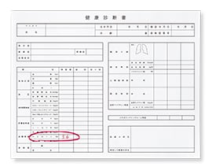
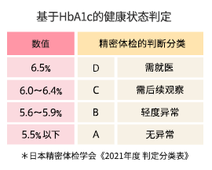
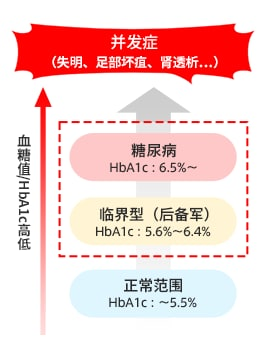

什么是HbA1c？
关于HbA1c
HbA1c是“HemoglobinA1c”的缩写,意即“糖化血红蛋白”。
了解血糖水平的方法，有空腹血糖值、餐后血糖值、HbA1c这三个指标（检查值）。
其中前两者是血糖水平的瞬间值，只能了解采血时的血糖水平。与此相对，通过HbA1c可以了解过去1-2个月的平均血糖水平。
血红蛋白（Hb）在日语中称为“血色素”，是在红血球中运送氧气的成分。血液之所以看起来是红色的，是因为血红蛋白呈现红色。这个血红蛋白（Hb）与血液里的葡萄糖“血糖”相结合后转化成了“HbA1c”。
血糖的量越多（血糖越高），血红蛋白和血糖越容易结合，而且维持高血糖的时间越长，HbA1c的量就越多。因此，通过检查HbA1c的量（百分比），可以掌握过去一定期间的血糖水平。

来源：糖化血红蛋白｜e-健康网（厚生劳动省）（来源：厚生劳动省）
怎样才能知道HbA1c？
健康检查或精密体检的诊断书中有“HbA1c”这一项目。一般数值在5.6%以上的话，需要采取相应措施。
|

|

|

|
来源：糖尿病｜e-健康网（厚生劳动省）（来源：厚生劳动省）
HbA1c偏高会怎么样？
HbA1c偏高显示糖尿病风险较高。糖尿病的诊断标准值，是以这种慢性高血糖引起的细小血管障碍，主要是视网膜的细小血管障碍“视网膜病”这一并发症发病时的血糖水平为基础制定的。其血糖水平是指空腹时在126mg/dL以上，口服75g葡萄糖2小时后在200mg/dL以上。与该高血糖水平相对应的HbA1c值为6.5%。
即使高血糖值尚不至于达到糖尿病的水平，也会产生各种各样的健康问题。这些健康障碍大多不是由于某一时间点的高血糖值而引起的，而是在一定时期内处于高血糖值状态，也就是说，由于HbA1c持续处于高值状态，会逐渐积累对身体的负担，其坏影响会在几年后出现。
|

|
|
|